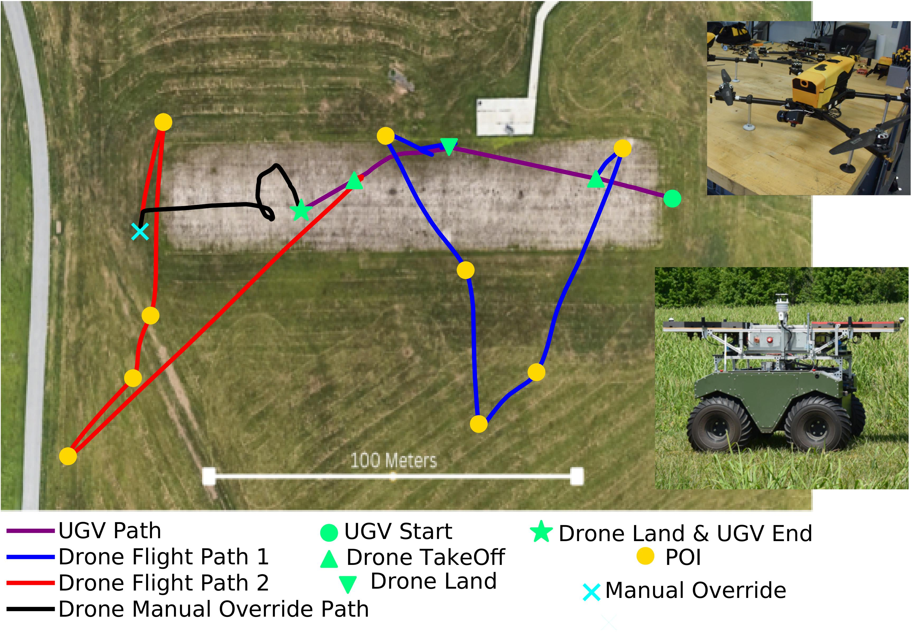

Drones are agile platforms that can be launched quickly and can easily traverse rough terrain. However, drones have limited onboard energy and cannot be deployed for extended periods of time. In contrast, Unmanned Ground Vehicles (UGVs) are robust, high endurance platforms that can cary a variety of sensors and operate for long periods of time, but lack the agility of drones. When combined, mixed drone-UGV teams could benefit from the strengths of each platform, where drones quickly accomplish tasks with agility and UGVs act as mobile recharging stations. This line of work looks at problems in planning and tasking for mixed drone-UGV teams, with a focus on energy sharing and communication.

This work studies how to effectively deploy a team of drones to collect data from wireless sensors. We seek to combine offline multi-vehicle task planning with online adaptive behavior through a data-driven approach. A major aspect of this work is validating our solution through both simulations and field experiments on our physical testbed.

Some of the major challenges in task planning for multi-robot systems is properly managing robot resources (e.g. capabilities, energy, collaboration) while mitigating failures. This line of work seeks to design and validate algorithms for multi-robot task allocation problems while overcoming these challenges. We are particularly interested in decentralized approaches that can adapt to lossy communication links between robots.